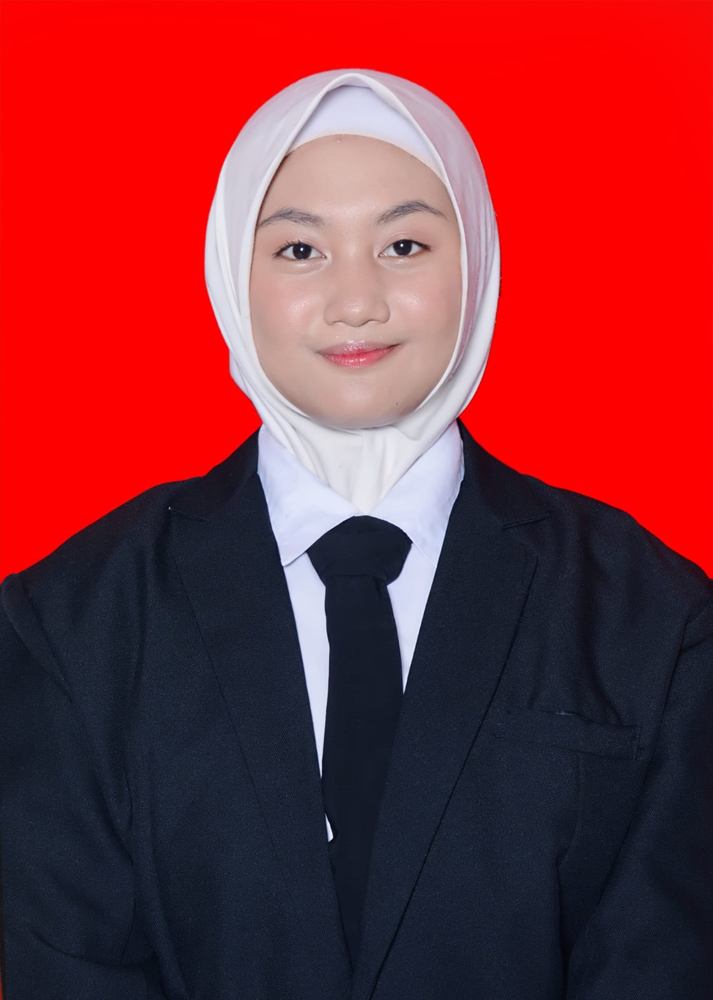

iqlima12borneo@gmail.com |
085100590501 |
Banjarmasin, Indonesia
Nama saya Iqlima Borneo Riana Mardhatillah, lahir di Banjarmasin. Saya adalah siswa SMKN 4 Banjarmasin dengan jurusan tata busana saya memiliki minat terhadap dunia fashion dan desain khususnya dalam pembuatan pola dan desain pakaian wanita. Selama bersekolah di SMK 4 jurusan tata busana saya bisa mendesain pakaian wanita,mempayet tunik,dll. Keterampilan saya menggambar desain,membuat pola,menjahit,menggunakan mesin jahit industri,mengoprasikan software desain grafis seperti ibisPaint X.
PROFIL
MIM 3 Al-Furqan | Tahun (2020-2023)
SMP Negeri 1 Banjarmasin | Tahun (2020-2023
SMK Negeri 4 Banjarmasin | Tahun (2023-2026)
penyelesaian pesanan untuk keluar magang sebanyak 10 pesanan Membuat busana custom-made untuk tugas praktik sekolah dan mengembangkan konsep usaha di bidang fashion.
Membuat gaun pesta dengan desain yang unik dan kreatif, serta memperhatian detail dalam pemilihan bahan dan aksesoris utuk mencitakan busana yaang elegan dan sesuai dengan ciri khas di tempat magang.